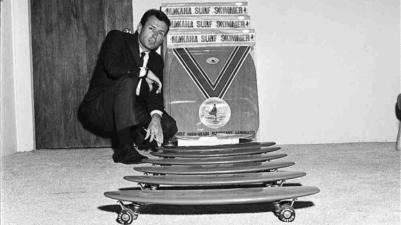
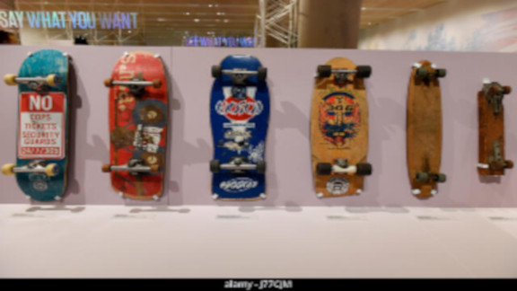
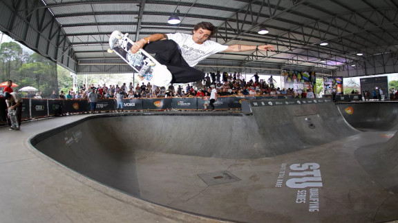
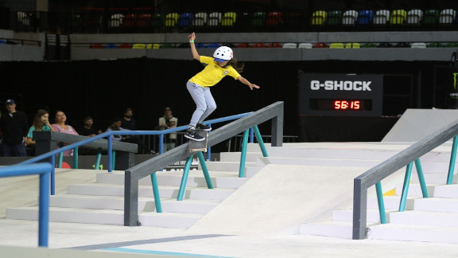

SOBRE O SKATEBOARD
PRIMEIRO SKATE

EVOLUÇÃO DO SKATE

Cansados de esperarem boas ondas no mar, os surfistas californianos passaram a montar um novo equipamento bastante sugestivo mas um tanto quanto peculiar. Dispondo de algumas rodas de patins, os surfistas fixaram-as em um deck de madeira que muito assemelhava-se a uma prancha de surf em menores proporções.
Por volta dos anos 60, tivemos a oficialização do skateboarding como um esporte de fato em um primeiro campeonato, o que propulsionou a venda de skates no mundo todo, posto que milhões de exemplares foram comercializados entre 1963 a 1969. Inclusive, o grande vencedor da competição, Larry Stevenson, foi também o fundador da marca pioneira em produção de skates em formato de prancha – a Makaha.
MODALIDADES DO SKATE
MODALIDADE PARK

MODALIDADE STREET

Foi em 1970 que a Califórnia passou por um extenso período de seca que acabou levando o esvaziamento de muitas piscinas em prol da frenética busca por água. Com a inativação dessas piscinas que possuiam curvas nas paredes semelhante as ondas, os surfistas passaram a notar possibilidades de praticar skate.
Simultaneamente, as peças que conformavam o skate estavam passando por uma grande fase revolucionária, marcada pela criação das rodas de uretano, material extremamente resistente, mas, sobretudo, macio.
De piscinas a rampas, foram sendo construídos os halfpipes, como ficaram conhecidos, possuíam duas transições em formato de U, você já deve ter visto algum por por aí.
Em 1975, as tricks passaram a ser aperfeiçoadas ainda mais, principalmente com a entrada do grupo de skatistas Z-Boys, renomado por lançar as manobras do surf sobre o skate. Mas, as manobras tipicamente consagradas como as mais básicas essenciais do skateboarding só começaram a despontar em 1979 com Alan Gelfand, lançando o Ollie.
Já em 1980, além dos halfpipes, rampas de madeiras começaram a ganhar forma nas ruas e praças públicas. O skate adquiriu uma pegada mais cosmopolita atingindo locais cada vez mais urbanos. Tudo era sinônimo de obstáculos, de corrimão, escadas e caixotes a hidrantes. Nasce assim a modalidade street.